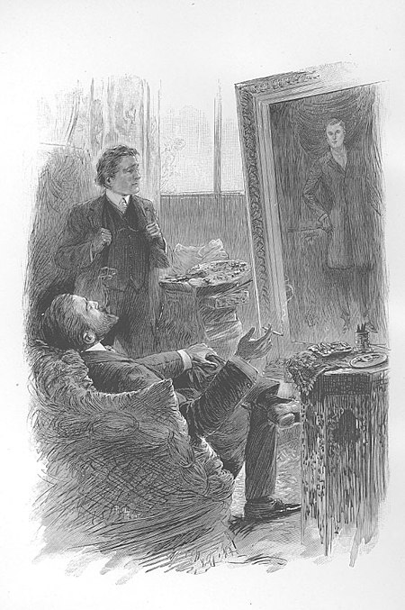

Important Characters
- Dorian Gray – a handsome, narcissistic young man enthralled by Lord Henry's "new" hedonism. He indulges in every pleasure and virtually every 'sin', studying its effect upon him.
- Basil Hallward – a deeply moral man, the painter of the portrait, and infatuated with Dorian, whose patronage realises his potential as an artist. The picture of Dorian Gray is Basil's masterpiece.
- Lord Henry "Harry" Wotton – an imperious aristocrat and a decadent dandy who espouses a philosophy of self-indulgent hedonism. Initially Basil's friend, he neglects him for Dorian's beauty. Lord Henry takes pleasure in impressing, influencing, and even misleading his acquaintances (to which purpose he bends his considerable wit and eloquence) but appears not to observe his own hedonistic advice, preferring to study himself with scientific detachment. His distinguishing feature is total indifference to the consequences of his actions.
- Sibyl Vane – a talented actress and singer, she is a beautiful girl from a poor family with whom Dorian falls in love. Her love for Dorian ruins her acting ability, because she no longer finds pleasure in portraying fictional love as she is now experiencing real love in her life. She commits suicide with poison on learning that Dorian no longer loves her; at that, Lord Henry likens her to Ophelia, in Hamlet.
- James Vane – Sibyl's younger brother, a sailor who leaves for Australia. He is very protective of his sister, especially as their mother cares only for Dorian's money. Believing that Dorian means to harm Sibyl, James hesitates to leave, and promises vengeance upon Dorian if any harm befalls her. After Sibyl's suicide, James becomes obsessed with killing Dorian, and stalks him, but a hunter accidentally kills James. The brother's pursuit of vengeance upon the lover (Dorian Gray), for the death of the sister (Sibyl) parallels that of Laertes' vengeance against Prince Hamlet.